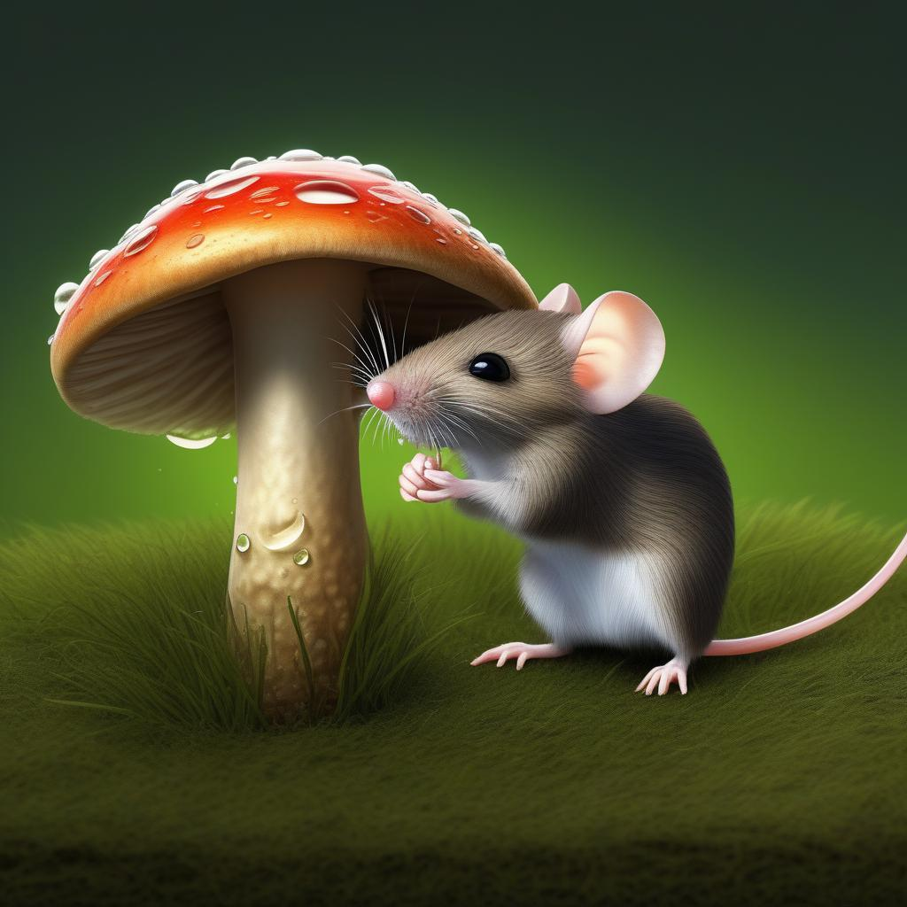

As the sun began to rise, Charles began to think about returning home. A dewfall just before dawn left droplets on the mushroom that had been his roof. Charles use several droplets to wash his face, then he turned his face towards home, back on yesterday's path.